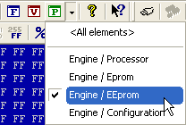

|
Elements |

  
|
|
Elements |
|
Basics:
Nowadays one ECU can contain data in multiple eproms, processor, eeprom, etc. That’s why WinOLS can administrate these different data ranges, too. In WinOLS they’re called "Elements".
One project can contain many elements (but at least one). Each element contains the data from one hardware, e.g. from the eprom.
Seeing the elements:
By default WinOLS will show you the eprom element. You can recognize that from the title of the WinOLS window: "WinOLS - 1134.ols (Original) as Engine / Eprom". If you have an element active, the map list will contain only the maps (and potential maps), which are in this element. Other functions like the "Differences" window or the search function ignore the data outside the current element, too. Just like export functions that only support one element (e.g. the binary export) and thus only export the current element.
Please note: By default all elements begin with the address 0. Thus, you can have a map in the eprom element at the address 0 and a map in the CPU element at address 0. Nevertheless these are different maps with different content.
Changing the current element:
You’ll see a small black triangle next to the button "Properties: Project" (a green P on the symbol bar "Navigation"). If you click on it, a small menu will open, displaying all the elements that the project contains. Click on the desired element to activate it.

Instead you may also (if the project contains multiple elements) change the "ECU usage" in the Dialog "project properties" to get the same effect.
Hardware elements & virtual elements:
Some of the checksums (and the free plugin OLS550) define virtual elements within the "normal" hardware elements. These can be seen as subitems of the hardware elements in the selection list and can help to limit the view to the essentials. Virtual elements are very often "data" elements and are then also used as help for the similarity search.
<All elements>:
The list with the elements also contains an entry "<All elements>". It shows all elements at the same time in one, long hexdump. This can be useful if you want to define the elements or if you’re unsure which element contains the maps that you’re looking for.
Editing & defining elements:
WinOLS automatically creates the elements when reading an ECU or importing from a BdmToGo file. If you want to change this definition, open the project properties and click the button "..." next to the ECU usage. The help for this dialog "Multiple elements in the project" (a subdialog of the "project properties") explains the details.
Elements vs. Versions:
One project can contain several elements and any number of versions. For all versions of one project the element definitions (Number, size, area) are identical. So, for example, an eprom element in the original cannot have a different size from the eprom element in version 1. If you change the current version, this change always applies to all elements of the project.